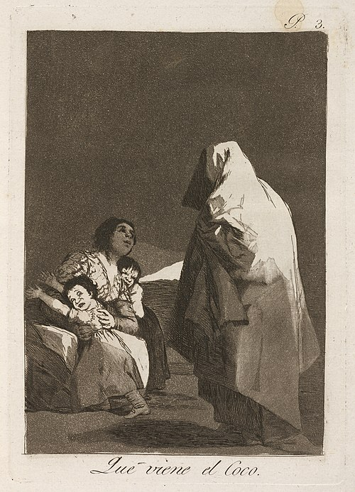

Home page

Goya's Que viene el Coco' (Here Comes the Boogeyman/The Boogeyman Is Coming), c. 1797
The Boogeyman
The bogeyman (/ˈboʊɡimæn/; also spelled or known as bogyman,[1] bogy,[1] bogey,[1] and, in US English, also boogeyman)[1] is a mythical creature typically used to frighten children into good behavior. Bogeymen have no specific appearances, and conceptions vary drastically by household and culture, but they are most commonly depicted as masculine, androgynous or even feminine monsters that punish children for misbehavior.[2] The bogeyman, and conceptually similar monsters can be found in many cultures around the world. Bogeymen may target a specific act or general misbehavior, depending on the purpose of invoking the figure, often on the basis of a warning from an authority figure to a child. The term is sometimes used as a non-specific personification of, or metonym for, terror – and sometimes the Devil.[3]